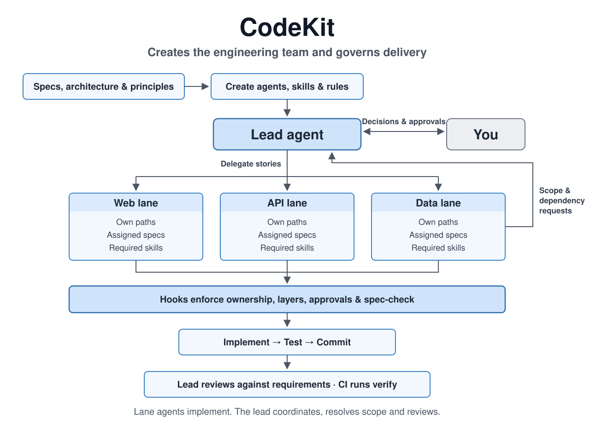

What it enforces
- Lanes. Each lane agent writes only its own paths. The lead writes contracts, specs and config, and delegates the rest. Any other subagent is read-only.
- Layers. Each layer depends only on the layers it lists, and never on packages it's denied. A write that would add a violation is refused before it reaches disk. In brownfield code, existing violations sit in a baseline that only ever shrinks.
- Protected paths, on the record. Every committed change to the kit, registers or contracts is logged in
.claude/approval-log.jsonl, in the same commit. - Spec-check before code. A lane can't write code on a branch until its spec-check report exists.
- Shell rules. No force-push, no commits to main, no
--no-verify, no new dependency without approval, no forged approvals, and your project's own blocked commands. - Proof before finishing. Before any agent finishes: an ownership audit of every uncommitted change, the layer rules, and your project's checks for the files that changed.
- In CI, too.
code-kit verifyruns the same rules on every pull request.

From an idea
/code-kit:next a booking app for mobile dog groomers starts with spec-design. It asks the questions that decide the build, a few at a time with a recommended answer, and writes every decision down: the problem and non-goals, two or three shapes of solution, the scope, one spec per area with numbered, testable requirements, then the architecture, principles and a plan of stories split into lanes. Then init turns that into enforced lanes and layers, and asks how hands-off you want the build.
The build
The lead dispatches every ready story to its lane, each in its own worktree on <lane>/st-<n>, in parallel. Lanes spec-check first, build end to end, name requirement IDs in their test titles, and commit. A reviewer agent reads each finished branch in the background and grades its findings. The lead reviews against the requirements; a blocker sends the branch back. Branches that pass join the merge queue and merge one at a time, each verified against main as it is then.
Between your prompts, the loop keeps it moving: with the lead idle, it hands it the next step. Stalled lanes are nudged, then restarted. A step that doesn't take twice comes to you.
In the session
With Claude Code 2.1.287 or later, code-kit's mod draws the build in front of you, in the terminal and the Desktop app.
- The band above your prompt: the goal, what the lead is doing now, the next step, each agent at work with its current tool, and whatever waits on you, with keys to answer.
- Lanes: the loop as a card, each lane with a pixel character, its state, story and live tool call, and a selected lane's stories as cards.
- Code map: a story's files by layer with their imports, glowing while a lane reads or edits them.
- Trail: every requirement to its stories, code and tests, gaps in red.
- Queue and Usage: the merge queue in order, and tokens per lane and story.
Approvals
Some things need a person: a new package, a change to a contract, an edit to the kit. When an agent hits one, its call is held while the band asks you, and runs once you approve. You can approve in chat and the lead records your words, or let the lead approve within delegated rules you set (licence, weekly downloads, age of the package, merges into main). Every approval lands in the log with its reason.
Commands
| /code-kit:next | Work out where the project stands and run the next step. |
| /code-kit:spec-design | An idea into a specification, decision by decision. |
| /code-kit:init docs/ | Draft the rules, agents and skills from the docs or the code. |
| /code-kit:dispatch next | Start every ready story on its lane. |
| /code-kit:review ST-12 | Check a finished branch; merge it or send it back. |
| /lanes · /harness | The Lanes pane, and the harness settings. |
| code-kit verify | Every rule against a branch, in a terminal or CI. |
| code-kit status · trail · map | The build against the spec; each requirement's trail; a story's code. |
| code-kit queue | The merge queue; merge its head as the lead or as you. |
When to use it
When several agents work on one codebase at once, the architecture has layers worth protecting, some files need an audit trail, the project has specs code should follow, and "done" has to mean done. It's overkill for a throwaway script: leave out .claude/code-kit.json and the plugin does nothing.